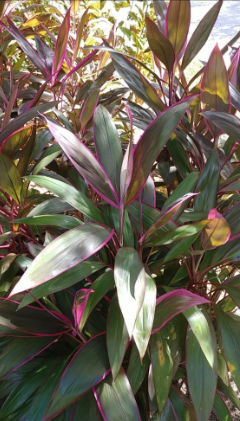

Info Tanaman Banyumanik

ANDONG
Kingdom: Plantae
Divisi: Tracheophyta
Class: Liliopsida
Ordo: Asparagales
Famili: Asparagaceae
Genus: Cordyline
Spesies: Cordyline fruticosa
🌱 Budidaya
- Lingkungan: Tumbuh baik di tempat teduh maupun terkena sinar matahari langsung. Cocok ditanam di pekarangan, taman, atau pot hias.
- Penanaman: Tanam langsung di tanah atau pot berukuran sedang. Pastikan ada lubang drainase jika ditanam di pot.
- Perawatan: Siram rutin 2–3 kali seminggu. Pemupukan ringan 1–2 bulan sekali dengan pupuk organik. Pangkas daun kering untuk menjaga tampilan rapi.
💡 Fun Fact
"Penjaga Spiritual Pekarangan" — Di beberapa budaya, tanaman andong dipercaya mampu mengusir roh jahat dan melindungi pemiliknya dari bahaya.
🍃 Manfaat
- Daunnya bersifat antiseptik dan anti-inflamasi, membantu menghentikan perdarahan ringan serta menyembuhkan luka.
- Daun merah atau ungu menarik dijadikan tanaman hias berkat tampilannya yang mencolok.
- Sering digunakan dalam upacara adat dan keagamaan di berbagai daerah Indonesia.